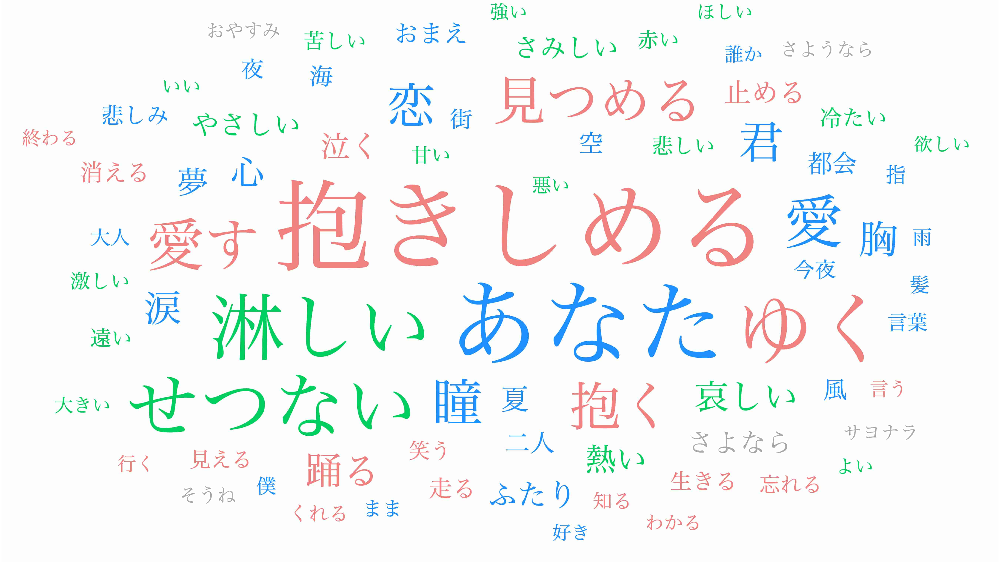
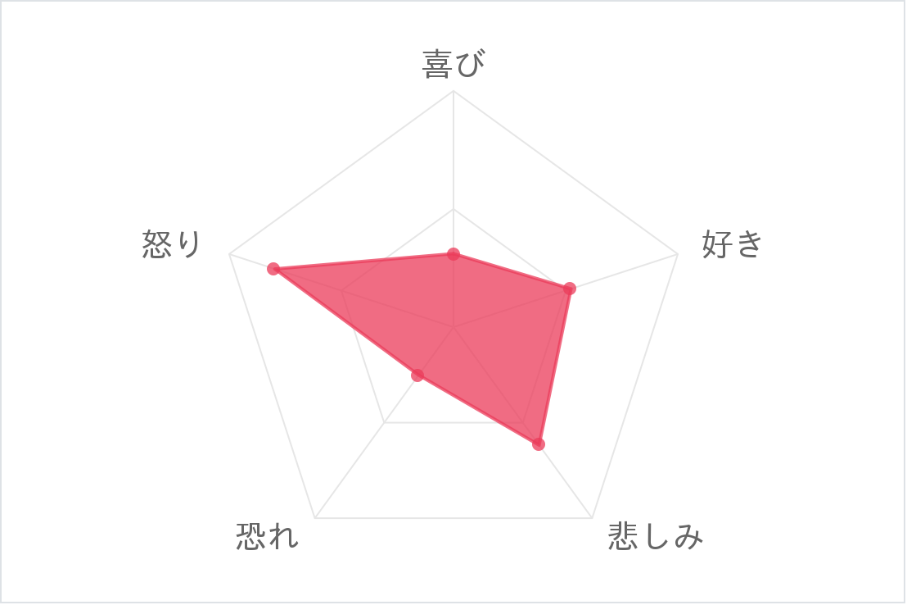
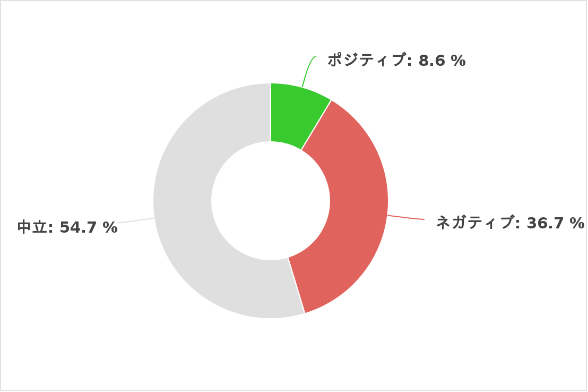

1980年代の分析
バブル経済の絶頂期、日本の経済と文化が世界に影響を与えた時代

単語の色は品詞の種類で異なっており、青色が名詞、赤色が動詞、緑色が形容詞、灰色が感動詞を表しています。
分析結果
感情のレーダーチャート
多くの歌詞は、個人の感情や人間関係の葛藤を描いています。特に愛や別れのテーマでは、感情の高まりや怒りがよく表現されているため、「怒り」のグラフが高く現れています。
センチメント分析
特に「悲しみ」や「愛」に関する曲が多く、ポジティブな感情は比較的少ないことが目立ちます。その分、ネガティブや中立的な感情が強く表現されていて、聴く人々に深い共感を与える作品が多かったように思います。
総括と影響
1980年代の楽曲は愛や感情的なつながりを中心にしていたことが読み取れます。「抱きしめる」や「愛」、「あなた」といった言葉は、人との深い絆や親密さがテーマであったことを示しています。一方で、「切ない」や「涙」といった言葉からは、恋愛に伴う痛みや悲しみが多く描かれていたことが伺えます。「夢」や「忘れる」などの言葉は、過去や失ったものへの思いを感じさせ、ノスタルジックな雰囲気を醸し出しています。このデータから、1980年代の音楽は感情豊かでありながら、特にネガティブや中立的なトーンが多かったことが分かります。恋愛の切なさや喪失感が中心的に描かれた一方で、内省的で落ち着いたテーマが多く取り上げられていた時代だったことがわかります。